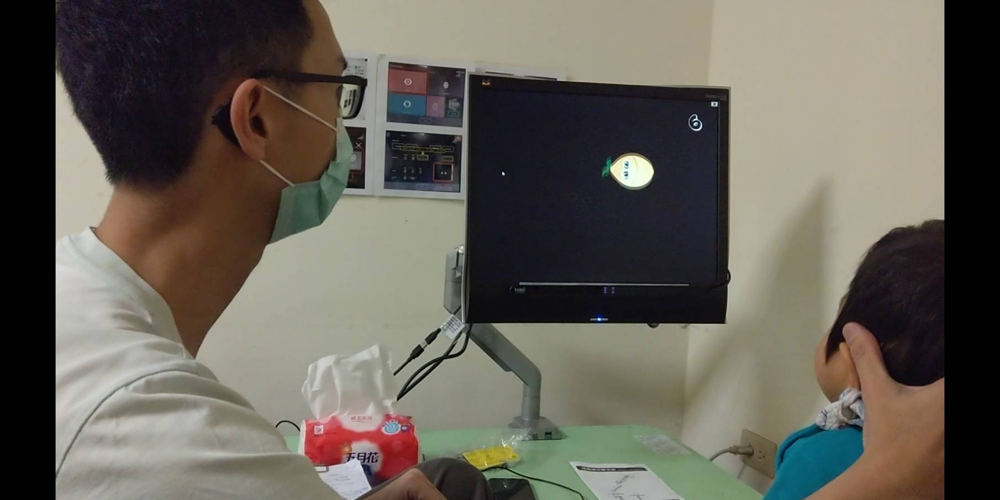
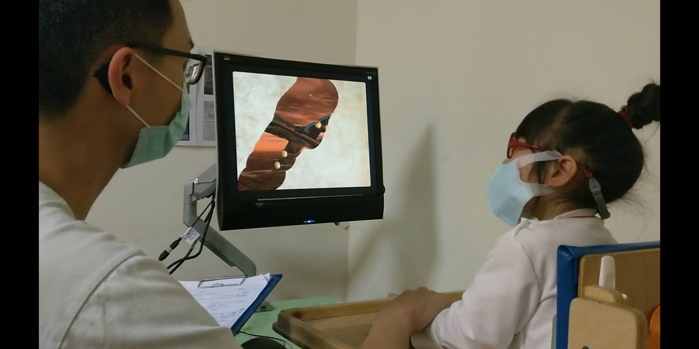
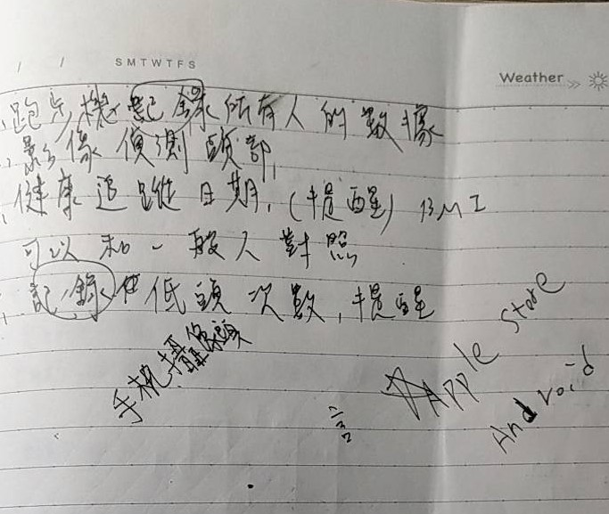

個人資料
- 姓名:江佳翰
- 性別:男
- 組別:第六組
- 參觀場所:心路寶貝中心
- 小組目標:與護理師討論後其需求為記錄健康狀況的APP
- 目前參觀機構次數:2次
3/26參訪:
我負責的部分是下午組，抵達時治療師說大部分小朋友都還在睡覺，只有一兩位先起床了，於是
邀請我們三關其中兩位小朋友的眼部訓練，治療師在訓練中要引導小朋友觀看正缺的地方，由於小朋友的注意力不集中他需要頻繁的提醒及矯正方向
非常辛苦，結束後治療師帶我們到另外一間教室進行課堂的構想與討論。


4/09參訪:今天是由一樣的治療師與我們進行討論，他們提出了一些APP需要的功能由我們記錄在紙上再帶回去討論，然後他帶我們參觀了其他小朋友的教室
，其中我還看到治療師對幫助一位小朋友進行站姿的訓練，在我們看來簡單的立正對他們來說也是不小的挑戰，雖然如此小朋友都非常努力地站的直挺挺的，真是不簡單。
